使用 Netbeans IDE 创建第一个 Servlet 应用
原文：https://www.studytonight.com/servlet/creating-servlet-in-netbeans.php
在最后一课中，我们创建了第一个 Servlet 应用，但是没有使用任何 IDE。IDE 是 IDE，它使创建应用变得容易得多。我们将学习如何在 NetBeans IDE 和 Eclipse IDE 上创建 Servlet 应用。然后你可以决定你想用哪一个。
使用 IDE 是创建 Servlet 应用最简单的方法。IDE 是一种软件应用，为计算机程序员提供软件开发工具。 Eclipse 、mycplise、 Netbeans 都是一些流行 Java IDE 的例子。
在 Netbeans IDE 中创建 Servlet 应用的步骤
要在 Netbeans IDE 中创建 servlet 应用，您需要遵循以下(简单的)步骤:
Open Netbeans IDE, Select File -> New Project
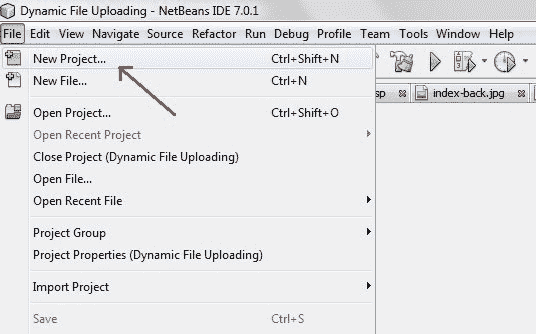
Select Java Web -> Web Application, then click on Next,
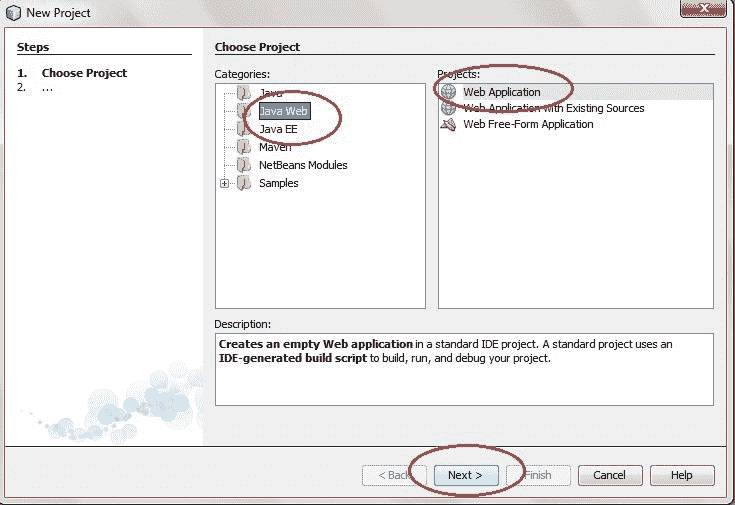
Give a name to your project and click on Next,
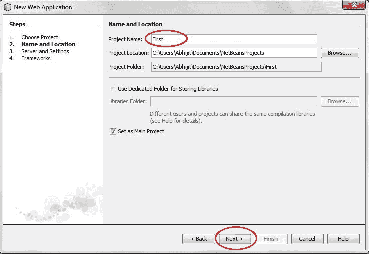
and then, Click Finish
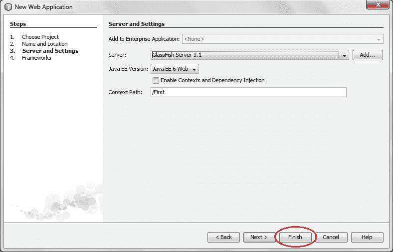
The complete directory structure required for the Servlet Application will be created automatically by the IDE.
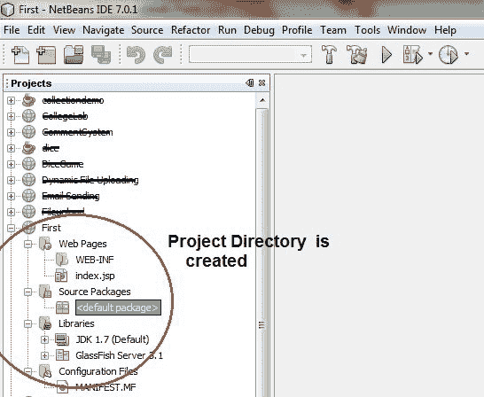
To create a Servlet, open Source Package, right click on default packages -> New -> Servlet.
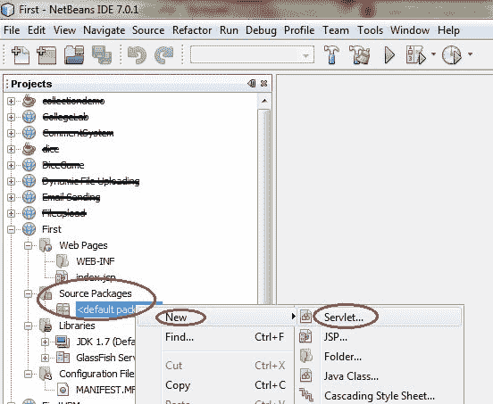
Give a Name to your Servlet class file,
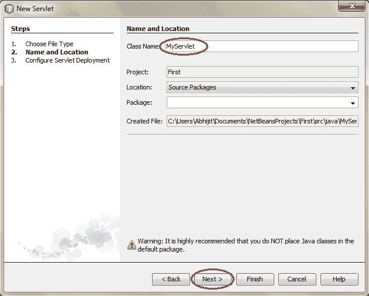
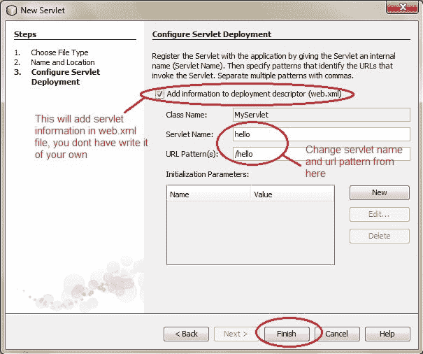
Now, your Servlet class is ready, and you just need to change the method definitions and you will good to go.
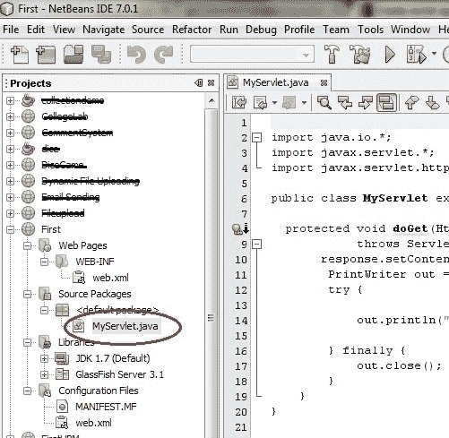
Write some code inside your Servlet class.
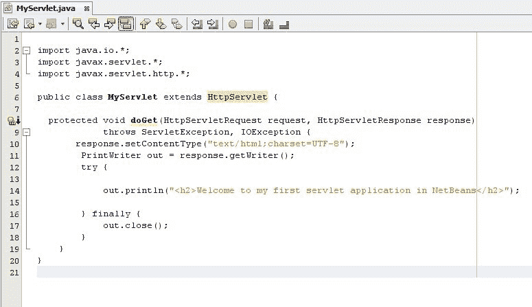
Create an HTML file, right click on Web Pages -> New -> HTML
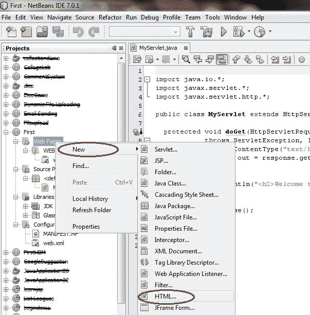
Give it a name. We recommend you to name it
index, because browser will always pick up theindex.htmlfile automatically from a directory. Index file is read as the first page of the web application.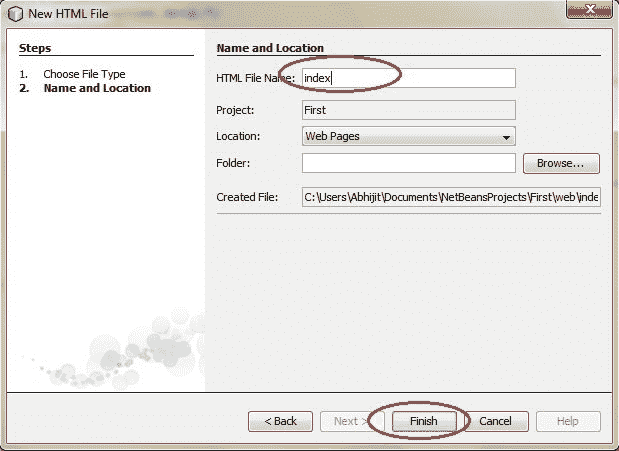
Write some code inside your HTML file. We have created a hyperlink to our Servlet in our HTML file.
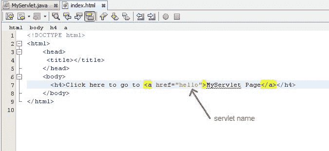
Edit web.xml file. In the web.xml file you can see, we have specified the url-pattern and the servlet-name, this means when
hellourl is accessed our Servlet file will be executed.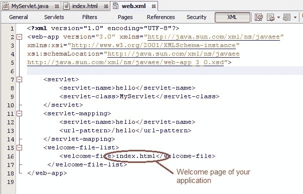
Run your application, right click on your Project and select Run
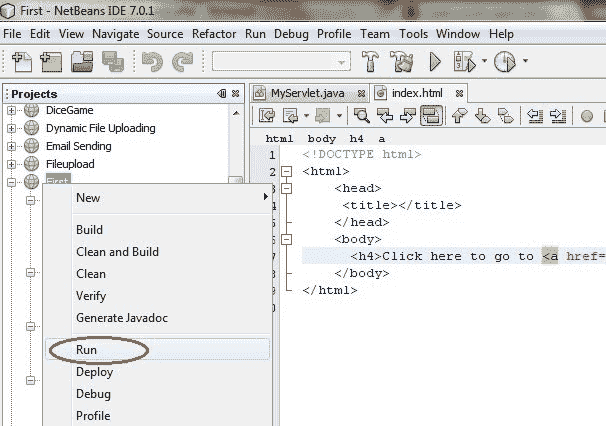
Click on the link created, to open your Servlet.
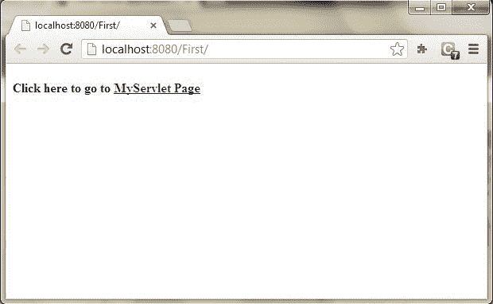
Hurray! Our First Servlet class is running.
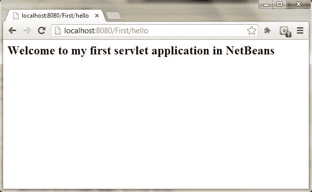